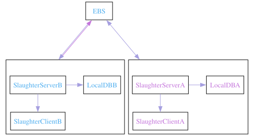
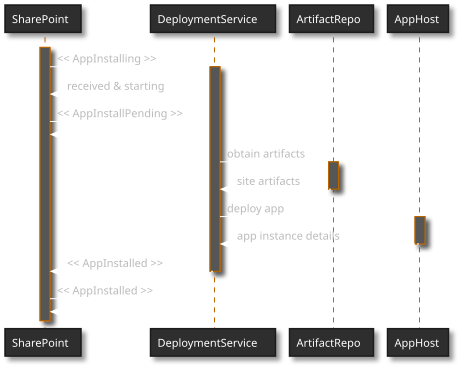
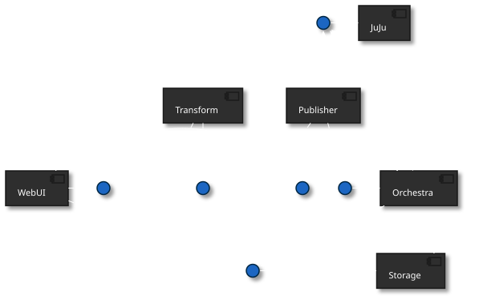
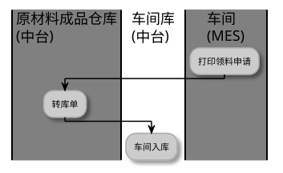
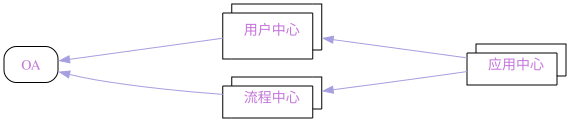
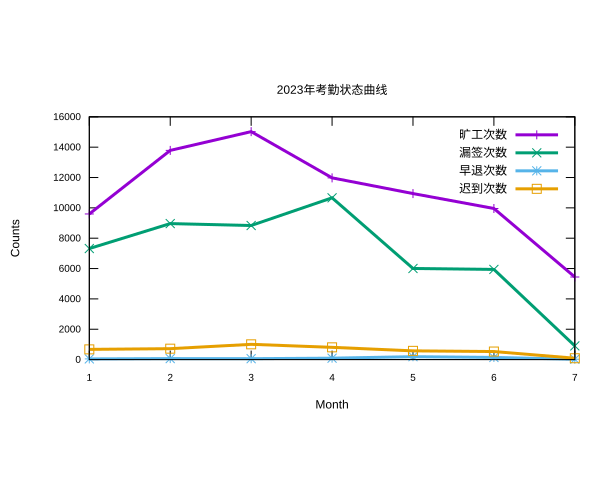
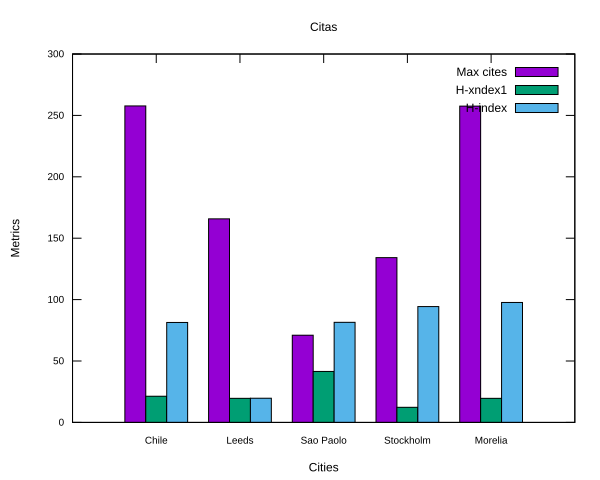
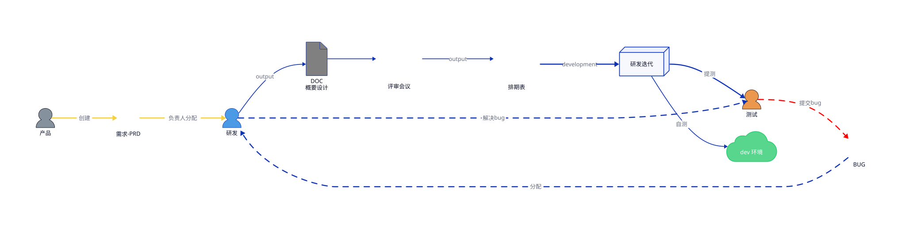

doom org style
A vairty of template about org mode code which one referenced the doom doc style
Table of Contents
一个类 doom doc 的 org html 样式模版 点此预览🪄
1. 使用
配置 snippet 模版，然后在 org mode 文件中使用 tt tab 就可展开此模版。
1: HTML_HEAD: <script src = "https://cdnjs.cloudflare.com/ajax/libs/jquery/3.3.1/jquery.min.js"></script> 2: HTML_HEAD: <script src = "https://emacs-1308440781.cos.ap-chengdu.myqcloud.com/scroll.js"></script> 3: HTML_HEAD: <link href = "https://emacs-1308440781.cos.ap-chengdu.myqcloud.com/base.css" rel="stylesheet" type="text/css"></link> 4: OPTIONS: prop:nil timestamp:t \n:t ^:nil f:t toc:t author:t num:t H:2 5: LATEX_COMPILER: xelatex 6: LATEX_CLASS: elegantpaper 7: latex:\newpage
想使用在线版的静态文件，可以使用下面的配置进行替换
1: HTML_HEAD: <link href="https://emacs-1308440781.cos.ap-chengdu.myqcloud.com/org_css.css" rel="stylesheet"></link> 2: HTML_HEAD: <script src="https://cdnjs.cloudflare.com/ajax/libs/jquery/3.3.1/jquery.min.js"></script> 3: HTML_HEAD: <script src="https://emacs-1308440781.cos.ap-chengdu.myqcloud.com/scroll.js"></script>
2. 字体样式
| 样式 | 效果 | 符号 |
| 粗体 | bold | * |
| 斜体 | italic | / |
| 下划线 | underlinedggwith | — |
| 超连接 | http://neoemacs.com | auto |
| 中横线 | + | |
| 按键 | code |
~ |
使用符号将字符包围就可得到样式效果
3. 特殊说明
3.1. quote 摘要、引用
可使用`quote`来进行代码块补全，表示摘要，引用
TECO - Tape [later text] Editor/COrrector
A combination text editor/really horrible ProgrammingLanguage. To quote the paper “RealProgrammers don’t use Pascal” (1983):
3.2. notice 注意事项、提醒
你有许多已标记的项目并且你可能错过一个重要的项目时，提醒可以提供帮助
Please do not file or answer Doom Emacs issues on Reddit, Twitter, or StackOverflow. Kindly refer them to this section.
这是 1 个例子
3.3. Declare a reference
According to the documentation Internal-Links we know there have two ways to sign a particular tag.
4. 段落及高亮
Example of an comment.
原文：用友 bip 产品功能说明 ，在说明文档
大数据中 最宝贵 、最难以代替的就是数据，一切都围绕数据。
HDFS 是最早的大数据存储系统，存储着宝贵的数据资产，各种新算法、框架要想得到广泛使用，必须支持 HDFS，才能获取已存储在里面的数据。所以大数据技术越发展，新技术越多，HDFS 得到的支持越多，越离不开 HDFS。HDFS 也许不是最好的大数据存储技术，但依然是最重要的大数据存储技术。
HDFS 是如何实现大数据高速、可靠的存储和访问的呢？
- Hadoop 分布式文件系统 HDFS 的设计目标是管理数以千计的服务器、数以万计的磁盘，将大规模的服务器计算资源当作一个单一存储系统进行管理，对应用程序提供数以 PB 计的存储容量，让应用程序像使用普通文件系统一样存储大规模的文件数据。
5. 表格
C-c ~ to convert to tabel.el table
C-c ~ to convert to org table
org table M-h M-l for move Columns left and right
org table M-k M-j for move Rows up and down
# table.el for merge Columns or Rows
| N | N^2 | N^3 | N^4 | sqrt(n) | sqrt[4](N) |
|---|---|---|---|---|---|
| 1 | 1 | 1 | 1 | 1 | 1 |
| 2 | 4 | 8 | 16 | 1.4142136 | 1.1892071 |
| 3 | 9 | 27 | 81 | 1.7320508 | 1.3160740 |
| Student | Prob 1 | Prob 2 | Prob 3 | Total | Note |
|---|---|---|---|---|---|
| Maximum | 10 | 15 | 25 | 50 | 10.0 |
| Peter | 10 | 8 | 23 | 41 | 8.2 |
| Sam | 2 | 4 | 3 | 9 | 1.8 |
| Average | 25.0 |
| Format | Fine-grained-control | Initial Effort | Syntax simplicity | Editor Support | Integrations | Ease-of-referencing | Versatility |
|---|---|---|---|---|---|---|---|
| Word | Word^2 | Word^3 | Word^4 | sqrt(Word) | sqrt(sqrt(Word)) | 2 | 2 |
| LaTeX | LaTeX^2 | LaTeX^3 | LaTeX^4 | sqrt(LaTeX) | sqrt(sqrt(LaTeX)) | 4 | 3 |
| Org Mode | Org^2 Mode^2 | Org^3 Mode^3 | Org^4 Mode^4 | sqrt(Org Mode) | sqrt(sqrt(Org Mode)) | 4 | 4 |
| Markdown | Markdown^2 | Markdown^3 | Markdown^4 | sqrt(Markdown) | sqrt(sqrt(Markdown)) | 3 | 1 |
| Markdown + Pandoc | (Markdown + Pandoc)^2 | (Markdown + Pandoc)^3 | (Markdown + Pandoc)^4 | sqrt(Markdown + Pandoc) | sqrt(sqrt(Markdown + Pandoc)) | 3 | 2 |
5.1. AWK 表格
| aardvark | 555-5553 | 1200/300 | B |
| alpo-net | 555-3412 | 2400/1200/300 | A |
| barfly | 555-7685 | 1200/300 | A |
| bites | 555-1675 | 2400/1200/300 | A |
| camelot | 555-0542 | 300 | C |
| core | 555-2912 | 1200/300 | C |
| fooey | 555-1234 | 2400/1200/300 | B |
| foot | 555-6699 | 1200/300 | B |
| macfoo | 555-6480 | 1200/300 | A |
| sdace | 555-3430 | 2400/1200/300 | A |
| sabafoo | 555-2127 | 1200/300 | C |
/foo/ { print $0 }
| fooey | 555-1234 | 2400/1200/300 | B |
| foot | 555-6699 | 1200/300 | B |
| macfoo | 555-6480 | 1200/300 | A |
| sabafoo | 555-2127 | 1200/300 | C |
5.2. 表格自增 ID
The target scope which at the left of equation , @ means row number and $ means column nubmer of increasing from one.
The expression which at the right of equation , @# stands for the row number of increasing from zero.
| 序号 | 字段名 | 名称 |
| 1 | age | 年龄 |
| 2 | bir | 出生年月日 |
#+tblfm: $1=@#-1
C-c C-c to execute it
6. LaTex 公式
$\mbox{需求的价格弹性系数} = \frac{\mbox{需求的变动率}}{\mbox{价格的变动率}}$
\[\mbox{需求的价格弹性系数} = \frac{\mbox{需求的变动率}}{\mbox{价格的变动率}}\]
\[\begin{aligned}
\cos 3\theta & = \cos (2 \theta + \theta) \\
& = \cos 2 \theta \cos \theta - \sin 2 \theta \sin \theta \\
& = (2 \cos ^2 \theta -1) \cos \theta - (2 \sin \theta\cos \theta ) \sin \theta \\
& = 2 \cos ^3 \theta - \cos \theta - 2 \sin ^2 \theta \cos \theta \\
& = 2 \cos ^3 \theta - \cos \theta - 2 (1 - \cos ^2 \theta )\cos \theta \\
& = 4 \cos ^3 \theta -3 \cos \theta
\end{aligned} \]
在行内显示公式：\(S_n = \frac{n}{2} \cdot (a + l) \cdot \sqrt(2)\)
或者使用独立公式：
\[\begin{aligned}
S_n &= \frac{n}{2} \cdot (a + l) \\
S_n &= \frac{n}{2} \cdot (2a + (n - 1)d) \\
Sum &= \frac{n}{\sum_{\substack{\begin{array}{l} \text{value} = ready \\ \text{time} \in [week] \end{array}}}\text{dailyPaper.record}}
\end{aligned}\]
7. Org 代码
代码片段开启行号，修改 `~/.emacs.d/.local/straight/repos/org/lisp/ox-html.el`
10: │ (let* ((code-lines (split-string code "\n")) 11: (code-length (length code-lines)) 12: (num-fmt 13: (and num-start 14: (format "%%%ds " 15: (format "%(add-hook 'code-review-mode-hook 16: │ │ │ │ │ (lambda () 17: │ │ │ │ │ │ ;; include *Code-Review* buffer into current workspace 18: │ │ │ │ │ │ (persp-add-buffer (current-buffer))))%%ds: "
7.1. Java 代码
│ /** │ │* @param request 调用的请求参数 │ │* @param needLog true 需要记录日志 false 不记录日志 │ │* @return │ │*/ │ protected NcApiResponse runApply(NcApiRequest request, Boolean needLog) { │ │ NcApiResponse ncApiResponse = null; │ │ try { │ │ │ final NcApiRequest ncApiRequest = executeBefore(request); │ │ │ ncApiResponse = executeGetRequest(ncApiRequest); │ │ } catch (Exception e) { │ │ │ afterExecute(needLog, e, request, ncApiResponse); │ │ │ if (e instanceof BizException) { │ │ │ │ throw new BizException("NC 提示", ((BizException) e).getErrorMsg(), e); │ │ │ } else { │ │ │ │ throw new BizException("NC 异常", e.getMessage()); │ │ │ } │ │ } │ │ │ │ return ncApiResponse; │ }
7.2. babel java
List<Integer> a = Arrays.asList(1, 2); return a;
C-c C-c to execute it, but export to html will fail when the babel java result generated.
8. 图片
8.1. 引用本地图片
Figure 1: create by https://excalidraw.com/
8.2. dot

Figure 2: XX 系统 v1.2.3 架构图
8.3. dot sk
digraph G {
node [shape="box",fontcolor="#4EAEEF"]
edge [color="#a69fe0" fontcolor=white]
bgcolor="transparent"
rankdir = TD
compound=true
subgraph clusterD {
fontcolor=white
label = "Local";
SlaughterServerB -> LocalDBB [splines=ortho]
SlaughterServerB -> SlaughterClientB [minlen=1]
{rank=same; SlaughterServerB , LocalDBB }
}
subgraph clusterM {
node [shape="box",fontcolor="#c475db"]
fontcolor=white
label = "Local";
SlaughterServerA -> LocalDBA [splines=ortho ]
SlaughterServerA -> SlaughterClientA [minlen=1]
{rank=same; SlaughterServerA , LocalDBA }
}
EBS -> SlaughterServerA [dir=both minlen=2 label="ϟ" lhead="clusterM"][constraint=true];
EBS -> SlaughterServerB [dir=both,minlen=2,label="ϟ" lhead="clusterD" color="#a69fe0:#c475db"]
}
8.4. plantuml with style css
plantuml 替换原生样式
DARKO RANGE/LIGHTORANGE/DARKBLUE/LIGHTBLUE/DARKRED/LIGHTRED/DARKGREEN/LIGHTGREEN
!define LIGHTORANGE !includeurl C4-PlantUML/juststyle.puml

Figure 3: 有样式的 plantuml 时序图
8.5. plant uml 系统 Contex 架构图
plantuml 替换原生样式
DARKORANGE/LIGHTORANGE/DARKBLUE/LIGHTBLUE/DARKRED/LIGHTRED/DARKGREEN/LIGHTGREEN
!define LIGHTBLUE !includeurl C4-PlantUML/juststyle.puml

Figure 4: 系统 Contex 架构图
8.6. 泳道图

8.7. plantuml 通过html自定义图片样式

8.8. plot 折线图
use org-plot/gnuplot for generate.
| 月份 | 旷工次数 | 漏签次数 | 早退次数 | 迟到次数 |
|---|---|---|---|---|
| 01 | 9598 | 7319 | 44 | 673 |
| 02 | 13788 | 8963 | 65 | 719 |
| 03 | 15024 | 8837 | 60 | 1005 |
| 04 | 11977 | 10662 | 92 | 807 |
| 05 | 10942 | 6005 | 191 | 575 |
| 06 | 9958 | 5943 | 142 | 530 |
| 07 | 5443 | 902 | 24 | 89 |

Figure 5: 折线图
8.9. plot 柱状图
| Sede | Max cites | H-xndex1 | H-index |
|---|---|---|---|
| Chile | 257.72 | 21.3 | 81.39 |
| Leeds | 165.77 | 19.6 | 19.68 |
| Sao Paolo | 71.00 | 41.5 | 81.50 |
| Stockholm | 134.19 | 12.3 | 94.33 |
| Morelia | 257.56 | 19.6 | 97.67 |

8.10. WHAT IS CONNECTOR
direction: right
style.fill : transparent
platform : BPM
platform -> RocketMq: invoke {
style.animated: true
}
platform -> API: interface/http/https {
style.animated: true
}
platform -> DataBase: DB_Link {style.animated: true}
RocketMq: {
shape: image
icon: https://upload.wikimedia.org/wikipedia/commons/thumb/8/89/Apache_RocketMQ_logo.svg/130px-Apache_RocketMQ_logo.svg.png?20210417072453
width: 10
style: {
stroke: green
font-color: green
fill: white
}
}
DataBase: {
shape: image
icon: https://cdn.icon-icons.com/icons2/1508/PNG/512/mysqlworkbench_103806.png
width: 20
}
API.style.multiple: true
RocketMq -> System : belong{
style.animated: true
style.stroke: "#53C0D8"
}
API -> System : belong{
style.animated: true
style.stroke: "#53C0D8"
}
DataBase -> System : belong{
style.animated: true
style.stroke: "#53C0D8"
}
8.11. d2 workflow

9. org 转 Word
pandoc -o ~/Desktop/out.docx ~/.doom.d/README.org
10. 插入时间
C-c . |
插入当前时间 |
K |
lask week |
J |
next week |
L |
next day |
11. Unicode 字符
Use unicode character could express of what you think more directly,cause an image symbol alway make the understanding more clearly.
Here are some unicode website of listing those character,✌
https://unicode.yunser.com/common
https://cn.piliapp.com/symbol/